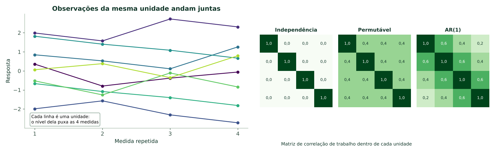
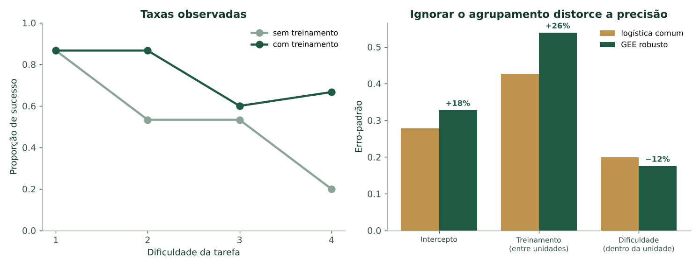

Equações de estimação generalizadas (GEE)
Estima efeitos médios na população quando as observações são agrupadas ou repetidas na mesma unidade.
Comece por aqui
Quatro medidas do mesmo operador não são quatro informações independentes: um operador habilidoso tende a ir bem nas quatro tarefas, e um operador com dificuldade, mal nas quatro. Tratar as 120 observações como se fossem 120 unidades independentes produz erros-padrão errados. As equações de estimação generalizadas (GEE) corrigem isso sem abandonar a interpretação simples dos coeficientes.
Se todos os operadores da população fizessem o curso, quanto subiria a taxa média de sucesso? Essa é uma pergunta sobre a média populacional. O modelo misto responde a outra: se este operador fizesse o curso, quanto mudaria a chance dele? As duas são legítimas, e dão números diferentes.
O que é o método
O GEE (LIANG; ZEGER, 1986) parte de um GLM comum e acrescenta duas coisas. Primeiro, uma matriz de correlação de trabalho \(\mathbf R(\alpha)\), que descreve como as observações dentro de um grupo se relacionam. Segundo, uma variância robusta (do tipo sanduíche), que corrige os erros-padrão mesmo que essa correlação tenha sido mal escolhida.

| Estrutura | Quando faz sentido |
|---|---|
| Independência | Nenhuma correlação suposta; os coeficientes saem iguais aos do GLM comum, mas os erros-padrão são corrigidos. |
| Permutável (exchangeable) | Medidas sem ordem natural dentro do grupo: alunos de uma turma, peças de um lote, tarefas sem sequência. |
| AR(1) | Medidas em sequência temporal, com correlação que diminui com o intervalo. |
| Não estruturada | Poucas medidas por grupo e muitos grupos; estima todas as correlações separadamente. |
Pressupostos e como verificá-los
| Pressuposto | Por que importa | Como verificar |
|---|---|---|
| Grupos independentes entre si | A correção vale dentro do grupo, não entre grupos. | Delineamento do estudo. |
| Modelo da média bem especificado | É a única parte que precisa estar certa para que as estimativas sejam consistentes. | Resíduos contra os preditores; formas funcionais alternativas. |
| Número suficiente de grupos | A variância robusta é assintótica no número de grupos, não de observações. | Referência usual: ao menos 30 a 40 grupos; abaixo disso, use correções de amostra pequena. |
| Dados faltantes completamente ao acaso | O GEE padrão exige a condição mais forte (MCAR), diferente dos modelos mistos. | Avalie o mecanismo de perda; se necessário, use GEE ponderado. |
| Estrutura de correlação razoável | Afeta a eficiência, não a consistência. | Compare estruturas pelo QIC; observe a correlação estimada. |
| Dados ordenados por grupo | Vários programas exigem isso. | Ordene por identificador antes de ajustar. |
Hipóteses e estatística de teste
Em que:
- \(K\)
- número de grupos (unidades independentes)
- \(\mathbf y_i,\ \boldsymbol\mu_i\)
- vetor de respostas e de médias do grupo i
- \(\mathbf D_i\)
- matriz de derivadas de \(\boldsymbol\mu_i\) em relação aos coeficientes
- \(\mathbf A_i\)
- matriz diagonal com as variâncias marginais de cada observação
- \(\mathbf R(\alpha)\)
- matriz de correlação de trabalho, com parâmetro \(\alpha\)
- \(\phi\)
- parâmetro de escala
- \(\mathbf H\)
- matriz de informação do modelo, usada como o “pão” do sanduíche
A expressão central não é uma verossimilhança: é um sistema de equações de estimação. Por isso o GEE não tem AIC nem teste de razão de verossimilhanças; a seleção de modelos usa o QIC (PAN, 2001).
Exemplo numérico, passo a passo
A correlação permutável estimada no exemplo é \(\alpha=0{,}188\). Com 4 medidas por operador, a matriz de trabalho é
Uma regra prática: com \(m\) medidas por grupo e correlação \(\alpha\), o número efetivo de observações independentes para um preditor que varia entre grupos é aproximadamente \(n/\left[1+(m-1)\alpha\right]\).
Aqui: \(1+(4-1)\times0{,}188=1{,}564\). As 120 observações equivalem a cerca de \(120/1{,}564\approx77\) independentes.
Como o erro-padrão cresce com \(1/\sqrt{n}\), isso corresponde a um aumento de cerca de \(\sqrt{1{,}564}=1{,}25\) — muito próximo do fator 1,26 observado no coeficiente do treinamento.
Propriedades
- As estimativas dos coeficientes são consistentes mesmo com a estrutura de correlação errada, desde que o modelo da média esteja correto.
- A variância robusta protege contra a má especificação da correlação, mas exige muitos grupos para funcionar bem.
- Os coeficientes têm interpretação marginal (média na população), não condicional a um indivíduo.
- Para respostas não lineares, como a logística, os coeficientes do GEE são sistematicamente menores em módulo que os de um modelo misto.
- A escolha da estrutura afeta a eficiência: uma estrutura próxima da real dá erros-padrão menores.
- O GEE não fornece verossimilhança: use o QIC para comparar modelos.
Como interpretar os resultados
| Elemento | O que informa | Cuidado |
|---|---|---|
| Coeficiente e exp(b) | Efeito médio na população, na escala da ligação. | Não é o efeito para um mesmo indivíduo. |
| Erro-padrão robusto | Precisão corrigida pelo agrupamento. | Pouco confiável com menos de 30 grupos. |
| Erro-padrão do modelo | Válido só se a correlação estiver bem especificada. | Prefira o robusto. |
| α estimado | Força da correlação dentro do grupo. | Valores altos indicam que ignorar o agrupamento seria grave. |
| QIC | Comparação entre estruturas de correlação. | Menor é melhor; não compare com AIC. |
- Preditor que varia entre grupos (como o treinamento): a análise ingênua subestima o erro-padrão, porque conta cada grupo várias vezes.
- Preditor que varia dentro do grupo (como a dificuldade): a análise ingênua costuma superestimar o erro-padrão, porque desperdiça a comparação interna.
Como executar no R e em Python
Onde executar o código em Python
Não é preciso instalar nada: o Google Colab é um computador na nuvem, gratuito, que executa Python pelo navegador e já traz as bibliotecas usadas aqui (numpy, scipy e matplotlib).
geeglm() pertence ao pacote geepack (HALEKOH; HØJSGAARD; YAN, 2006). Instale uma única vez com install.packages("geepack"). O identificador do grupo vai em id=, a estrutura em corstr=, e os dados precisam estar ordenados por grupo. O pacote gee é uma alternativa.
# install.packages("geepack")
library(geepack)
modelo <- geeglm(sucesso ~ treinamento + dificuldade, id = operador,
data = dados, family = binomial, corstr = "exchangeable")
summary(modelo)
O código Python desta ficha faz as contas passo a passo com numpy e scipy, para que cada resultado possa ser acompanhado. No dia a dia, a biblioteca statsmodels, também disponível no Google Colab, oferece esses modelos prontos.
Exemplo de aplicação
Contexto dos dados
Trinta operadores executaram as mesmas quatro tarefas, de dificuldade crescente, e registrou-se se cada tarefa foi concluída no tempo previsto. Metade dos operadores havia feito um curso de treinamento. São 120 observações, mas apenas 30 unidades independentes: as quatro tarefas de um mesmo operador compartilham a habilidade dele. Os dados são fictícios, criados para esta ficha.
Código em R
# Equações de estimação generalizadas (GEE): exemplo completo ----
# Pacote: geepack. Instale uma única vez: install.packages("geepack")
library(geepack)
# 1. Dados: 30 operadores executam as mesmas 4 tarefas (dados fictícios)
treino_operador <- c(1, 0, 0, 0, 1, 1, 0, 0, 0, 1, 0, 1, 1, 1, 0,
1, 1, 1, 1, 0, 1, 1, 0, 0, 1, 0, 0, 1, 0, 0)
sucesso <- c(1, 1, 0, 0, 1, 1, 1, 0, 1, 0, 0, 0, 1, 0, 1, 1, 1, 1, 1, 1,
1, 1, 1, 0, 1, 1, 0, 1, 1, 0, 1, 0, 0, 0, 0, 0, 0, 1, 0, 0,
1, 1, 0, 0, 1, 1, 1, 1, 1, 0, 0, 1, 0, 1, 0, 1, 1, 1, 1, 0,
1, 1, 1, 1, 1, 1, 0, 1, 1, 1, 1, 1, 1, 0, 0, 0, 0, 0, 0, 0,
1, 1, 1, 1, 1, 1, 1, 1, 1, 1, 0, 0, 1, 1, 0, 0, 1, 1, 1, 0,
1, 0, 1, 0, 1, 0, 1, 0, 1, 1, 1, 1, 1, 1, 1, 0, 1, 1, 1, 1)
dados <- data.frame(
operador = factor(rep(1:30, each = 4)),
treinamento = rep(treino_operador, each = 4),
dificuldade = rep(1:4, times = 30) - 2.5,
sucesso = sucesso)
xtabs(~ treinamento + sucesso, data = dados)
# 2. Análise ingênua: logística que ignora o agrupamento por operador
m_naive <- glm(sucesso ~ treinamento + dificuldade, data = dados, family = binomial)
summary(m_naive)
# 3. GEE com correlação de trabalho permutável (exchangeable)
# IMPORTANTE: os dados precisam estar ordenados por unidade (id)
m_gee <- geeglm(sucesso ~ treinamento + dificuldade, id = operador,
data = dados, family = binomial, corstr = "exchangeable")
summary(m_gee)
# 4. Correlação de trabalho estimada
summary(m_gee)$corr
# 5. Razões de chances e intervalos de confiança de 95%
b <- coef(m_gee); ep <- summary(m_gee)$coefficients[, 2]
round(exp(cbind(OR = b, inferior = b - 1.96 * ep, superior = b + 1.96 * ep)), 4)
# 6. Outras estruturas de trabalho e comparação por QIC
m_ind <- geeglm(sucesso ~ treinamento + dificuldade, id = operador,
data = dados, family = binomial, corstr = "independence")
m_ar1 <- geeglm(sucesso ~ treinamento + dificuldade, id = operador,
data = dados, family = binomial, corstr = "ar1")
rbind(independencia = QIC(m_ind), permutavel = QIC(m_gee), ar1 = QIC(m_ar1))
# 7. Comparação com o modelo misto (efeito aleatório por operador)
# install.packages("lme4")
# m_misto <- lme4::glmer(sucesso ~ treinamento + dificuldade + (1 | operador),
# data = dados, family = binomial)
# O GEE estima o efeito MÉDIO NA POPULAÇÃO; o misto, o efeito PARA UM MESMO operador.
# 8. Gráfico: taxas observadas
taxas <- tapply(dados$sucesso, list(dados$dificuldade, dados$treinamento), mean)
matplot(1:4, taxas, type = "b", pch = 19, lty = 1, lwd = 2, ylim = c(0, 1),
xlab = "Dificuldade da tarefa", ylab = "Proporção de sucesso")
legend("bottomleft", c("sem treinamento", "com treinamento"), col = 1:2, lwd = 2, bty = "n")
A mesma análise em Python, com os resultados
Cole o código em um notebook do Google Colab ↗ e execute com Shift+Enter. Os valores abaixo são a saída desse código.
# Bibliotecas: numpy, scipy e matplotlib (já instaladas no Google Colab)
import numpy as np
from scipy import stats, optimize
import matplotlib.pyplot as plt
# Dados: 30 operadores executam as mesmas 4 tarefas, de dificuldade crescente (dados fictícios).
# sucesso = 1 se a tarefa foi concluída no tempo previsto | treinamento = 1 se o operador fez o curso
treino_operador = np.array([1, 0, 0, 0, 1, 1, 0, 0, 0, 1, 0, 1, 1, 1, 0,
1, 1, 1, 1, 0, 1, 1, 0, 0, 1, 0, 0, 1, 0, 0.])
sucesso = np.array([1, 1, 0, 0, 1, 1, 1, 0, 1, 0, 0, 0, 1, 0, 1, 1, 1, 1, 1, 1,
1, 1, 1, 0, 1, 1, 0, 1, 1, 0, 1, 0, 0, 0, 0, 0, 0, 1, 0, 0,
1, 1, 0, 0, 1, 1, 1, 1, 1, 0, 0, 1, 0, 1, 0, 1, 1, 1, 1, 0,
1, 1, 1, 1, 1, 1, 0, 1, 1, 1, 1, 1, 1, 0, 0, 0, 0, 0, 0, 0,
1, 1, 1, 1, 1, 1, 1, 1, 1, 1, 0, 0, 1, 1, 0, 0, 1, 1, 1, 0,
1, 0, 1, 0, 1, 0, 1, 0, 1, 1, 1, 1, 1, 1, 1, 0, 1, 1, 1, 1.])
G, T = 30, 4
operador = np.repeat(np.arange(1, G + 1), T)
treinamento = np.repeat(treino_operador, T)
dificuldade = np.tile(np.arange(1, T + 1), G)
X = np.column_stack([np.ones(G * T), treinamento, dificuldade - 2.5])
nomes = ["(Intercepto)", "treinamento", "dificuldade"]
def imprime(nomes, b, ep, rotulo):
z = b / ep; p = 2 * stats.norm.sf(np.abs(z)); zc = stats.norm.ppf(0.975)
print(f" {rotulo}")
print(f" {'Termo':<14}{'Estimativa':>11}{'Erro-padrão':>13}{'z':>8}{'p-valor':>10}{'OR':>8}{'IC 95% da OR':>22}")
for nm, bi, ei, zi, pi in zip(nomes, b, ep, z, p):
print(f" {nm:<14}{bi:>11.4f}{ei:>13.4f}{zi:>8.3f}{pi:>10.4f}{np.exp(bi):>8.3f} [{np.exp(bi-zc*ei):>6.3f}; {np.exp(bi+zc*ei):>6.3f}]")
def logistica(X, y):
"""Regressão logística comum, que supõe todas as observações independentes."""
b = np.zeros(X.shape[1])
for _ in range(60):
p = 1 / (1 + np.exp(-X @ b)); W = p * (1 - p)
b = b + np.linalg.solve(X.T @ (X * W[:, None]), X.T @ (y - p))
p = 1 / (1 + np.exp(-X @ b))
return b, np.sqrt(np.diag(np.linalg.inv(X.T @ (X * (p * (1 - p))[:, None]))))
def gee(X, y, grupo, estrutura="permutavel"):
"""Equações de estimação generalizadas, resposta binária, com variância robusta (sanduíche)."""
b, _ = logistica(X, y); grupos = np.unique(grupo); n, p = X.shape
for _ in range(80):
mu = 1 / (1 + np.exp(-X @ b))
r = (y - mu) / np.sqrt(mu * (1 - mu)) # resíduos de Pearson
phi = np.sum(r**2) / (n - p)
if estrutura == "permutavel": # correlação igual entre todos os pares
soma = 0.0; pares = 0
for g in grupos:
rr = r[grupo == g]
for a in range(len(rr)):
for c in range(a + 1, len(rr)): soma += rr[a] * rr[c]; pares += 1
alpha = soma / (pares * phi)
else:
alpha = 0.0 # independência
U = np.zeros(p); H = np.zeros((p, p)); M = np.zeros((p, p))
for g in grupos:
i = np.where(grupo == g)[0]; m = len(i)
Xi = X[i]; mui = mu[i]; A = mui * (1 - mui)
R = np.full((m, m), alpha); np.fill_diagonal(R, 1.0)
V = phi * np.outer(np.sqrt(A), np.sqrt(A)) * R
Vinv = np.linalg.inv(V); D = Xi * A[:, None]; res = y[i] - mui
U += D.T @ Vinv @ res; H += D.T @ Vinv @ D
M += D.T @ Vinv @ np.outer(res, res) @ Vinv @ D
passo = np.linalg.solve(H, U); b = b + passo
if np.max(np.abs(passo)) < 1e-10: break
Hinv = np.linalg.inv(H)
return b, np.sqrt(np.diag(Hinv @ M @ Hinv)), np.sqrt(np.diag(Hinv)), alpha, phi
# 1. Descrição
print(f"{G} operadores x {T} tarefas = {G*T} observações | taxa geral de sucesso = {sucesso.mean():.3f}")
print(f"Com treinamento: {sucesso[treinamento==1].mean():.3f} | sem treinamento: {sucesso[treinamento==0].mean():.3f}")
print("Taxa por dificuldade:", [round(sucesso[dificuldade == d].mean(), 3) for d in range(1, 5)])
# 2. Análise ingênua: regressão logística que ignora o agrupamento
b_n, ep_n = logistica(X, sucesso)
print(); imprime(nomes, b_n, ep_n, "Logística comum (supõe independência):")
# 3. GEE com correlação permutável (exchangeable)
b_g, ep_rob, ep_mod, alpha, phi = gee(X, sucesso, operador)
print(f"\n Correlação permutável estimada: alpha = {alpha:.4f} | parâmetro de escala: phi = {phi:.4f}")
imprime(nomes, b_g, ep_rob, "GEE permutável, erro-padrão robusto:")
# 4. O mesmo GEE com erro-padrão baseado no modelo (sem a correção robusta)
print(); imprime(nomes, b_g, ep_mod, "GEE permutável, erro-padrão do modelo:")
# 5. GEE com estrutura de independência e erro-padrão robusto
b_i, ep_i, _, _, _ = gee(X, sucesso, operador, estrutura="independencia")
print(); imprime(nomes, b_i, ep_i, "GEE independência, erro-padrão robusto:")
# 6. Comparação dos erros-padrão
print("\nTermo Logística comum GEE robusto Razão")
for nm, e1, e2 in zip(nomes, ep_n, ep_rob):
print(f"{nm:<16}{e1:>14.4f}{e2:>14.4f}{e2/e1:>9.2f}")
print("treinamento varia ENTRE operadores: a logística comum subestima o erro-padrão.")
print("dificuldade varia DENTRO de cada operador: a logística comum o superestima.")
# 7. Correlação dentro do operador, observada diretamente
m = sucesso.reshape(G, T)
print(f"\nCorrelação média entre pares de tarefas do mesmo operador: {np.mean([np.corrcoef(m[:, a], m[:, c])[0,1] for a in range(T) for c in range(a+1, T)]):.4f}")
print(f"Operadores com 0, 1, 2, 3 e 4 sucessos: {np.bincount(m.sum(axis=1).astype(int), minlength=5)}")
# 8. Comparação com o modelo misto (efeito aleatório por operador)
# O GEE estima o efeito MÉDIO NA POPULAÇÃO; o modelo misto, o efeito PARA UM MESMO operador.
nos, pesos = np.polynomial.hermite_e.hermegauss(31)
def menos_logv_misto(par):
b = par[:3]; sigma = np.exp(par[3]); total = 0.0
for g in range(1, G + 1):
i = operador == g; eta = X[i] @ b; yi = sucesso[i]
lp = np.array([np.sum(yi * (eta + sigma * v) - np.log1p(np.exp(eta + sigma * v))) for v in nos])
m = lp.max(); total += m + np.log(np.sum(pesos * np.exp(lp - m)) / np.sqrt(2 * np.pi))
return -total
res = optimize.minimize(menos_logv_misto, [0.1, 1.0, -0.7, np.log(1.5)], method="Nelder-Mead",
options={"xatol": 1e-7, "fatol": 1e-7, "maxiter": 4000})
bm = res.x[:3]; sigma = np.exp(res.x[3])
print(f"\nModelo misto (quadratura de Gauss-Hermite): sigma do operador = {sigma:.4f}")
print(f"{'Termo':<16}{'GEE (populacional)':>20}{'Misto (por operador)':>22}")
for nm, g1, g2 in zip(nomes, b_g, bm):
print(f"{nm:<16}{g1:>20.4f}{g2:>22.4f}")
print(f"Atenuação esperada: {bm[1]:.4f} / raiz(1 + 0,346 x {sigma:.3f}²) = {bm[1]/np.sqrt(1+0.346*sigma**2):.4f}"
f" (GEE: {b_g[1]:.4f})")
# 9. Gráfico
fig, ax = plt.subplots(1, 2, figsize=(11, 4))
for t in range(1, 5):
ax[0].bar([t - 0.2, t + 0.2], [sucesso[(dificuldade == t) & (treinamento == 0)].mean(),
sucesso[(dificuldade == t) & (treinamento == 1)].mean()],
width=0.38, color=["gray", "darkgreen"])
ax[0].set_xticks(range(1, 5)); ax[0].set_xlabel("Dificuldade da tarefa"); ax[0].set_ylabel("Proporção de sucesso")
ax[1].bar(np.arange(3) - 0.2, ep_n, width=0.38, label="logística comum")
ax[1].bar(np.arange(3) + 0.2, ep_rob, width=0.38, label="GEE robusto")
ax[1].set_xticks(range(3)); ax[1].set_xticklabels(nomes, rotation=15); ax[1].set_ylabel("Erro-padrão"); ax[1].legend()
plt.show()
Resultados da execução
30 operadores x 4 tarefas = 120 observações | taxa geral de sucesso = 0.642 Com treinamento: 0.750 | sem treinamento: 0.533 Taxa por dificuldade: [np.float64(0.867), np.float64(0.7), np.float64(0.567), np.float64(0.433)] Logística comum (supõe independência): Termo Estimativa Erro-padrão z p-valor OR IC 95% da OR (Intercepto) 0.1546 0.2786 0.555 0.5790 1.167 [ 0.676; 2.015] treinamento 1.1000 0.4264 2.580 0.0099 3.004 [ 1.302; 6.929] dificuldade -0.7168 0.1995 -3.594 0.0003 0.488 [ 0.330; 0.722] Correlação permutável estimada: alpha = 0.1881 | parâmetro de escala: phi = 1.0569 GEE permutável, erro-padrão robusto: Termo Estimativa Erro-padrão z p-valor OR IC 95% da OR (Intercepto) 0.1487 0.3275 0.454 0.6498 1.160 [ 0.611; 2.204] treinamento 1.1449 0.5387 2.125 0.0336 3.142 [ 1.093; 9.032] dificuldade -0.7197 0.1753 -4.104 0.0000 0.487 [ 0.345; 0.687] GEE permutável, erro-padrão do modelo: Termo Estimativa Erro-padrão z p-valor OR IC 95% da OR (Intercepto) 0.1487 0.3576 0.416 0.6776 1.160 [ 0.576; 2.339] treinamento 1.1449 0.5455 2.099 0.0358 3.142 [ 1.079; 9.153] dificuldade -0.7197 0.1870 -3.848 0.0001 0.487 [ 0.337; 0.702] GEE independência, erro-padrão robusto: Termo Estimativa Erro-padrão z p-valor OR IC 95% da OR (Intercepto) 0.1546 0.3275 0.472 0.6370 1.167 [ 0.614; 2.218] treinamento 1.1000 0.5385 2.043 0.0411 3.004 [ 1.046; 8.631] dificuldade -0.7168 0.1737 -4.128 0.0000 0.488 [ 0.347; 0.686] Termo Logística comum GEE robusto Razão (Intercepto) 0.2786 0.3275 1.18 treinamento 0.4264 0.5387 1.26 dificuldade 0.1995 0.1753 0.88 treinamento varia ENTRE operadores: a logística comum subestima o erro-padrão. dificuldade varia DENTRO de cada operador: a logística comum o superestima. Correlação média entre pares de tarefas do mesmo operador: 0.2378 Operadores com 0, 1, 2, 3 e 4 sucessos: [2 3 9 8 8] Modelo misto (quadratura de Gauss-Hermite): sigma do operador = 1.2723 Termo GEE (populacional) Misto (por operador) (Intercepto) 0.1487 0.1849 treinamento 1.1449 1.4469 dificuldade -0.7197 -0.9145 Atenuação esperada: 1.4469 / raiz(1 + 0,346 x 1.272²) = 1.1584 (GEE: 1.1449)

| Elemento | Valor |
|---|---|
| Operadores × tarefas | 30 × 4 = 120 observações |
| Taxa geral de sucesso | 0,642 |
| Com e sem treinamento | 0,750 e 0,533 |
| Taxa por dificuldade (1 a 4) | 0,867; 0,700; 0,567; 0,433 |
| Correlação observada entre tarefas do mesmo operador | 0,238 |
| Termo | Logística comum: estimativa (EP) | GEE permutável: estimativa (EP robusto) | OR do GEE (IC 95%) |
|---|---|---|---|
| (Intercepto) | 0,1546 (0,2786) | 0,1487 (0,3275) | 1,160 [0,611; 2,204] |
| Treinamento | 1,1000 (0,4264) | 1,1449 (0,5387) | 3,142 [1,093; 9,032] |
| Dificuldade | −0,7168 (0,1995) | −0,7197 (0,1753) | 0,487 [0,345; 0,687] |
| Termo | Valor-p ingênuo | Valor-p do GEE | Razão entre os erros-padrão |
|---|---|---|---|
| Treinamento | 0,0099 | 0,0336 | 1,26 |
| Dificuldade | 0,0003 | < 0,0001 | 0,88 |
Leitura: os coeficientes quase não mudam, mas a precisão sim. O treinamento varia entre operadores: a análise ingênua contava cada operador quatro vezes e, por isso, exagerava a confiança (p de 0,010 passa para 0,034). A dificuldade varia dentro de cada operador: ali a comparação é interna, e o GEE reconhece que ela é mais informativa do que parecia (o erro-padrão cai 12%). A correlação de trabalho estimada foi α = 0,188, próxima da correlação observada entre tarefas do mesmo operador (0,238).
GEE ou modelo misto?
| Termo | GEE (efeito populacional) | Modelo misto (efeito por operador) |
|---|---|---|
| (Intercepto) | 0,1487 | 0,1849 |
| Treinamento | 1,1449 | 1,4469 |
| Dificuldade | −0,7197 | −0,9145 |
| Desvio-padrão entre operadores | — | 1,272 |
Os coeficientes do modelo misto são maiores em módulo, e isso não é erro de nenhum dos dois: eles respondem a perguntas diferentes. A relação entre eles é aproximadamente \(\beta_{\text{populacional}}\approx\beta_{\text{individual}}/\sqrt{1+0{,}346\,\sigma^2}\). Aqui: \(1{,}447/\sqrt{1+0{,}346\times1{,}272^2}=1{,}158\), muito próximo do 1,145 estimado pelo GEE. Para decidir sobre um programa de treinamento aplicado a toda a equipe, o número do GEE é o que interessa; para aconselhar um operador específico, o do modelo misto.
Erros comuns
| Erro | Como evitar |
|---|---|
| Comparar coeficientes de GEE e de modelo misto como se fossem a mesma coisa | São efeitos marginais e condicionais; não são intercambiáveis. |
| Usar GEE com poucos grupos | Com menos de 30 grupos, a variância robusta é otimista; use correções de amostra pequena. |
| Reportar o erro-padrão do modelo em vez do robusto | O robusto é a razão de ser do método. |
| Usar AIC ou teste de razão de verossimilhanças | Não há verossimilhança; use o QIC. |
| Ignorar o padrão de dados faltantes | O GEE padrão exige perda completamente ao acaso. |
| Não ordenar os dados por grupo | Vários programas produzem resultados errados silenciosamente. |
| Supor que a estrutura de correlação precisa estar certa | Ela afeta a eficiência; o que precisa estar certo é o modelo da média. |
Alternativas e fluxo de trabalho
| Procedimento | Quando preferir |
|---|---|
Modelos mistos (lme4, nlme) | Interesse no efeito individual, na variabilidade entre unidades ou em previsões por unidade; dados faltantes ao acaso. |
| Erros-padrão agrupados (cluster-robust) | Apenas corrigir a inferência de um modelo já ajustado. |
| ANOVA de medidas repetidas | Resposta contínua, delineamento balanceado e sem dados faltantes. |
| GEE ponderado por probabilidade inversa | Dados faltantes que dependem de variáveis observadas. |
| GLM comum | Observações realmente independentes. |
| Modelos de equações estruturais ou multiníveis | Hierarquias com três ou mais níveis. |
- Identifique a unidade de agrupamento e conte quantas existem.
- Especifique o modelo da média com cuidado: é a parte que precisa estar certa.
- Escolha uma estrutura de correlação plausível.
- Ajuste e reporte os erros-padrão robustos.
- Compare estruturas pelo QIC.
- Decida entre efeito marginal e individual conforme a pergunta.
Referências desta ficha
- LIANG, Kung-Yee; ZEGER, Scott L. Longitudinal data analysis using generalized linear models. Biometrika, v. 73, n. 1, p. 13-22, 1986.
- ZEGER, Scott L.; LIANG, Kung-Yee. Longitudinal data analysis for discrete and continuous outcomes. Biometrics, v. 42, n. 1, p. 121-130, 1986.
- HARDIN, James W.; HILBE, Joseph M. Generalized estimating equations. 2. ed. Boca Raton: Chapman & Hall/CRC, 2013.
- HALEKOH, Ulrich; HØJSGAARD, Søren; YAN, Jun. The R package geepack for generalized estimating equations. Journal of Statistical Software, v. 15, n. 2, p. 1-11, 2006.
- PAN, Wei. Akaike’s information criterion in generalized estimating equations. Biometrics, v. 57, n. 1, p. 120-125, 2001.
- DIGGLE, Peter J.; HEAGERTY, Patrick; LIANG, Kung-Yee; ZEGER, Scott L. Analysis of longitudinal data. 2. ed. Oxford: Oxford University Press, 2002.
- R CORE TEAM. R: a language and environment for statistical computing. Vienna: R Foundation for Statistical Computing, 2026. Disponível em: https://www.r-project.org/.
- POSIT TEAM. RStudio: integrated development environment for R. Boston: Posit Software, PBC. Disponível em: https://posit.co/download/rstudio-desktop/.
- VIRTANEN, Pauli et al. SciPy 1.0: fundamental algorithms for scientific computing in Python. Nature Methods, v. 17, p. 261-272, 2020. DOI: 10.1038/s41592-019-0686-2. (Funções do módulo
scipy.stats.) - HARRIS, Charles R. et al. Array programming with NumPy. Nature, v. 585, p. 357-362, 2020. DOI: 10.1038/s41586-020-2649-2.
- HUNTER, John D. Matplotlib: a 2D graphics environment. Computing in Science & Engineering, v. 9, n. 3, p. 90-95, 2007.
- GOOGLE. Google Colaboratory. Disponível em: https://colab.research.google.com/.
- Os dados do exemplo são fictícios e foram criados pelo autor. As figuras desta ficha foram elaboradas pelo autor.

Prof. Dr. Cássius Henrique Xavier Oliveira
Professor · ICTIN/UFLA · Estatística, Confiabilidade e Ciência de Dados.
Conheça minha trajetória e projetos →